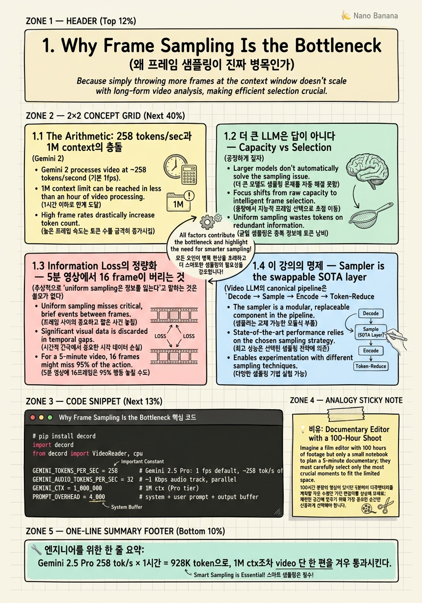

Why Frame Sampling Is the Bottleneck

🎯 학습 목표
- Gemini 2.5의 258 tokens/sec 같은 vendor별 token budget을 암산으로 추정할 수 있다
- 1시간짜리 1080p 영상을 1M context에 통과시킬 때 어디서 깨지는지 정량적으로 설명할 수 있다
- Encoder-side 병목과 decoder-side 병목을 구분하고, sampling이 왜 encoder-side 문제인지 말할 수 있다
- Uniform 16-frame sampling이 5분 30 fps 영상에서 무엇을 버리는지 scene-level로 설명할 수 있다
- 왜 sampler가 '월 단위로 SOTA가 바뀌는 plug-and-play 모듈'인지, 그리고 왜 그 지점에 투자해야 하는지 논증할 수 있다
비디오 LLM을 처음 시스템에 붙일 때 엔지니어가 가장 먼저 부딪히는 환상은 '1M context window가 있으니 1시간 비디오 정도는 그냥 통째로 넣으면 된다'는 것이다. 이 강의는 그 환상을 한 챕터에 걸쳐 해체하는 것에서 시작한다. 핵심은 단순하다. Gemini 2.5 Pro는 1초 영상에 약 258 token을 쓴다. 1 fps로 샘플링된 1시간 영상이 곧바로 928K token을 잡아먹고, 텍스트 prompt와 audio까지 합치면 1M 한계를 그대로 넘긴다. 즉 video LLM의 token economics는 절대로 너그럽지 않다.
동시에 production 환경의 모든 상용 API — Gemini, Qwen2.5-VL, LLaVA-Video, VideoChat-Flash — 가 여전히 uniform / fixed-fps sampling을 쓰고 있다. 한편 연구 SOTA(AKS, BOLT, GenS, Frame-Voyager, Q-Frame, AdaRD-Key, FOCUS)는 같은 frame 예산에서 정확도를 10pt 이상 끌어올리거나, 같은 정확도를 93% 적은 frame으로 달성한다. 이 갭이 이 강의가 존재하는 이유다.
이 챕터의 목표는 결론을 외우는 게 아니라 *직관을 정량화*하는 것이다. Token budget, encoder/decoder bottleneck, information loss를 수치로 계산할 줄 알게 된 다음에야 이후 챕터에서 다룰 AKS의 relevance-coverage trade-off나 VideoChat-Flash의 HiCo 1/50 compression이 왜 그 모양인지 설명될 수 있다.
핵심 내용
1.1 The Arithmetic: 258 tokens/sec과 1M context의 충돌
Gemini 2.5 Pro의 공식 spec을 보면 video는 'default 1 fps, 약 258 tokens per second of video' 로 명시되어 있다. 이 숫자를 그냥 외우지 말고 곱셈해 보자. 5분짜리 영상은 300초 × 258 ≈ 77.4K token. 30분은 464K. 1시간은 928K. 즉 1M context를 가진 Gemini 2.5 Pro조차도 default 설정으로는 *1시간 영상 하나를 겨우 통과시키는 수준*이고, 거기에 prompt, system instruction, audio track(audio도 parallel하게 1 Kbps 정도로 token화됨), 출력 buffer를 더하면 한 번의 inference에서 다른 어떤 컨텍스트도 끼워 넣기 어려워진다.
이걸 production에서 흔히 마주치는 시나리오로 옮기면 더 분명해진다. CCTV 24시간 retrospective QA? 6.2M token이 필요하다. 90분짜리 영화 한 편 Q&A? 1.4M token. 12편짜리 드라마 시즌 binge-recall? 약 17M token. 이 시점에서 '더 큰 context window를 기다리자'는 답은 무너진다. 2026년 현재 frontier는 2M(Gemini 2.5 Pro low-res mode)까지 와 있지만 그것조차 6시간을 못 채운다. 더 본질적인 문제는, context를 두 배로 늘려도 attention의 quadratic cost와 prefill latency가 따라서 두 배가 되지 않는다는 점이다. KV cache는 GPU HBM을 잠식하고, TTFT(time-to-first-token)는 사용자가 견딜 수 없는 수준으로 늘어난다.
그래서 token 예산은 '확장 가능한 자원'이 아니라 '냉정하게 분배해야 하는 고정 자원'이라고 봐야 한다. 엔지니어가 던져야 할 첫 질문은 '내 모델의 context는 얼마인가'가 아니라 '내가 답하려는 *결정* 하나에 token이 몇 개 필요한가, 그리고 그 token이 내 영상의 어느 *순간*에 가야 하는가'다. 이 강의 전체가 그 질문 위에 서 있다.
1.2 더 큰 LLM은 답이 아니다 — Capacity vs Selection
공정하게 짚자. LLM 크기를 키우면 video understanding 점수가 오르는 것은 사실이다. LLaVA-Video-7B에서 72B로 가면 Video-MME에서 몇 pt 오른다. 그런데 같은 LLaVA-Video-7B에 AKS(CVPR 2025) 같은 query-aware sampler를 끼우면 *동일한 7B 모델*이 *72B baseline*을 이긴다. 이게 핵심이다. 모델 크기를 10배 키워 얻는 이득이, 잘 만든 sampler 하나로 동일하게 얻어진다는 사실은 우연이 아니라 구조적이다. 정답을 만들 능력은 이미 7B에도 충분히 있고, 부족한 것은 *정답을 만들 근거 frame*이 context에 들어와 있느냐다.
이 구조를 두 개의 bottleneck으로 분리해 보자. Decoder-side bottleneck은 attention 위에서 token 간 관계를 잘 추론하는 능력이다. 여기서는 model size, training data, RLHF가 효과가 있다. Encoder-side bottleneck은 raw video 픽셀에서 어떤 시간 구간을, 어떤 해상도로, 어떤 순서로 token으로 변환할지에 대한 결정이다. 여기서 model size는 거의 도움이 안 된다. 도움이 되는 것은 sampler 그 자체와, sampler가 prompt를 참조할 수 있는지(query-aware) 여부다. 2025–2026 SOTA가 일제히 후자에 베팅한 것은 이 분리를 명시적으로 인정한 결과다.
경제적으로도 결론은 같다. 72B 모델을 서빙하는 비용은 7B의 약 10배다. 거기에 video token 길이까지 두 배가 되면 attention의 quadratic cost가 4배다. 같은 정확도를 얻기 위해 sampler를 갈아끼우는 R&D 비용은 *한 번* 내고 끝나지만, capacity를 키우는 비용은 *매 요청*마다 든다. Production에서 latency, $/query, GPU 점유율을 동시에 만족시켜야 하는 팀은 결국 selection 쪽으로 밀린다. 이 강의가 sampler를 architecturally swappable한 component로 다루는 이유다.
1.3 Information Loss의 정량화 — 5분 영상에서 16 frame이 버리는 것
추상적으로 'uniform sampling은 정보를 잃는다'고 말하는 것은 쓸모가 없다. 숫자로 가자. 5분짜리 30 fps 영상은 9,000 frame이다. LLaVA-Video나 InternVL2.5 같은 open-source 모델의 default max_frames=16이면, 모델이 보는 비율은 16 / 9,000 ≈ 0.18%다. 다르게 말하면 영상의 99.82%가 input 단계에서 폐기된다. Frame 간 간격은 약 18.75초. 1초 안에 끝나는 reaction shot, 0.5초짜리 폭발, 3초짜리 표정 변화는 *통계적으로* 절대 16-sample grid에 안 걸린다.
구체적인 예를 들면, 요리 튜토리얼 5분 영상에서 셰프가 칼로 양파를 자르는 동작이 12초 동안 일어난다고 하자. Uniform 16-frame이 18.75초 간격이면 이 동작에 0개 또는 1개의 frame이 떨어진다. 모델이 '셰프가 양파를 어떻게 잘랐는가'에 답할 수 있을 확률은 사실상 *무작위*다. 더 잔혹한 예는 surveillance / dashcam 시나리오다. 10분짜리 dashcam에서 사고 순간은 0.4초다. 16-frame uniform sampling은 37.5초마다 하나씩 찍으므로 사고 frame이 뽑힐 확률은 0.4/37.5 ≈ 1.07%. 그리고 이게 바로 BOLT(CVPR 2025)가 'uniform 8-frame on 1-hour video'를 anti-pattern으로 명시한 이유다.
그렇다면 production 1 fps default(Gemini, VideoChat-Flash)는 어떨까. 30 fps 원본 기준 30배 다운샘플, 즉 97%를 버린다. 16-frame uniform보다 훨씬 낫지만 1초 미만의 micro-event는 여전히 통과되지 않는다. 그리고 1 fps × 1시간 = 3,600 frame인데 frame 하나가 약 258 token이니 928K token, 위에서 본 그대로다. 즉 *uniform sampling은 token 예산을 다 쓰면서도 micro-event를 잃는다*는 두 가지 실패를 동시에 한다. 이게 query-aware adaptive sampler가 등장한 진짜 motivation이다 — 같은 token 예산에서 'query가 가리키는 순간'에 frame을 몰아 줄 수 있으면 두 실패를 동시에 줄일 수 있기 때문이다.
1.4 이 강의의 명제 — Sampler is the swappable SOTA layer
Video LLM의 canonical pipeline은 Decode → Sample → Encode → Token-Reduce → LLM 다섯 단계로 정리된다. 이 중 Decode 단계는 Decord / PyAV / NVDEC에서 거의 commodity가 되었고, Encode는 CLIP / SigLIP / Marengo로 수렴 중이며, LLM은 Qwen3-VL / Gemini / LLaVA-Video 사이에서 큰 폭의 점프가 자주 일어나지 않는다. 그러나 Sample 단계는 2024년부터 2026년 6월 현재까지 *매 학회마다* SOTA가 바뀐다. CVPR 2025의 AKS / BOLT, ICLR 2025의 Frame-Voyager, ICCV 2025의 Q-Frame, ICLR 2026 submission의 AdaRD-Key와 FOCUS, 그리고 2026년 들어 agentic loop으로 옮겨가는 FrameThinker / FrameMind / A.I.R. 이 모두 sampler 단계의 plug-and-play 교체다.
이 강의의 명제는 명확하다. Sampler는 video LLM 시스템에서 유일하게 월 단위로 갈아끼울 가치가 있는 component이고, 그 교체를 안전하게 만들 수 있는 architecture에 투자해야 한다. 9장에서 다룰 Sampler.select(video, query, budget) -> List[int] 인터페이스가 왜 그 모양인지, vLLM-Omni의 disaggregated stage 분리가 왜 91.4% JCT 감소를 만드는지, 모두 이 명제에서 따라 나온다. 반대로 sampler를 LLM 코드 안에 hard-coding한 팀은 매 새 paper가 나올 때마다 모델 서빙을 멈추고 코드를 갈아엎어야 한다.
이 명제는 한 가지 의무를 동반한다 — sampler가 swappable해지려면 *공통의 evaluation harness*도 swappable해야 한다. lmms-eval, Video-MME, MLVU, LongVideoBench, EgoSchema, HourVideo, Multi-Hop NIAH(10K frame)가 그 역할을 한다. 10장에서 이 harness를 직접 만들 것이다. 지금은 이렇게 기억하자. *'sampler를 갈아끼울 수 있는 시스템'이라는 한 줄이 이 강의의 전부다.*
1.5 강의 전체 forward reference
2장은 uniform / fps / PySceneDetect 같은 classical baseline을 정확히 어디서 깨지는지 정량화한다. 3장은 CVPR 2025의 AKS / BOLT로 query-aware adaptive sampling의 첫 SOTA를 다룬다. 4장은 Frame-Voyager / M-LLM / GenS의 learned sampler — combinational ranking과 generative retriever — 를 구현 수준에서 본다. 5장은 Q-Frame / AdaRD-Key / FOCUS의 relevance × diversity frontier, log-det diversity와 multi-armed bandit으로 2026년 SOTA의 모양을 잡는다.
6장은 1시간 이상의 long-video로 확장 — LongVU의 DINOv2 temporal pruning, Hour-LLaVA의 MemAug, VideoMarathon 9.7K시간 dataset, HourVideo 벤치마크. 7장은 sampling과 직교하는 token compression — VideoChat-Flash의 HiCo 1/50과 10K-frame NIAH 99.1%, NVILA scale-then-compress, FastVID dynamic density. '언제 sample 줄이고 언제 token 줄이느냐'의 결정 규칙을 만든다.
8장은 commercial reality — Gemini, Twelve Labs Marengo/Pegasus, Qwen2.5-VL, VideoChat-Flash가 실제 production에서 무엇을 쓰는지와, 왜 research SOTA가 그리로 안 가는지의 영구적 갭을 분석한다. 9장은 architecture — Sampler.select() 계약, vLLM-Omni disaggregated pipeline, Twelve Labs Embed cache, anti-pattern 6선. 10장은 직접 swappable reference architecture를 만들고 Video-MME / MLVU / LongVideoBench / EgoSchema / Multi-Hop NIAH 전체 벤치마크로 평가한다. 강의를 마치면 'AKS-v2가 어제 arXiv에 올라왔다'는 소식에 시스템을 멈추지 않고 한 시간 안에 교체할 수 있는 엔지니어가 되어 있어야 한다.
💡 비유로 이해하기
다큐멘터리 편집자 한 명을 상상하자. 다섯 명의 카메라 팀이 6개월 동안 100시간 분량의 raw footage를 찍어 왔다. 최종 상영본은 90분, 즉 약 1.5%. 편집자가 'raw가 너무 많으니 매 5초마다 한 frame씩 균일하게 잘라서 보겠다'고 하면 어떻게 될까. 그는 인터뷰 대상이 결정적인 답을 내뱉는 0.8초짜리 표정 변화를 절대 못 본다. 폭우 속 시위대가 갈라지는 3초짜리 순간도 못 본다. 100시간 중 *어떤 1.5%가 이야기를 만드는지*는 균일 grid가 알려주지 않는다.
실제 편집자는 그렇게 일하지 않는다. 그는 먼저 '내가 만들고 싶은 이야기'(=query)를 정한다. 그다음에 raw 100시간을 빠르게 훑으면서 *그 이야기와 관련된 순간*에만 표시를 남긴다(=relevance scoring). 그리고 한 장면이 다음 장면으로 잘 연결되도록 *서로 다른 분위기의 cut을 섞어*(=diversity) 90분 안에 모든 beat을 채운다. 이게 정확히 AKS와 BOLT의 relevance-coverage 트레이드오프이고, AdaRD-Key의 log-det diversity가 형식화한 직관이다.
중요한 건 그가 라이팅과 색보정, 사운드 디자인에 더 좋은 장비(=더 큰 LLM)를 사도 같은 균일 cut 위에서는 영화가 좋아지지 않는다는 점이다. 영화의 질을 결정하는 *진짜 결정*은 어떤 1.5%를 들고 편집실에 들어가느냐다. Video LLM도 똑같다. 1M context는 편집실 크기일 뿐이고, 그 안에 어떤 cut을 가지고 들어가느냐 — 즉 sampling — 가 결과를 만든다.
💻 코드 예시
Token budget 산수를 머리로만 하지 말고 직접 돌려 보자. 아래 스크립트는 Decord로 임의의 영상 파일을 열고, 길이를 잰 다음, Gemini 2.5 Pro의 default 1 fps × 258 tokens/sec spec을 그대로 적용해 *그 영상 하나가 1M context의 몇 %를 잡아먹는지* 출력한다. 30분 영상 하나만 넣어도 1M의 절반 가까이 사라진다는 걸 직접 보게 된다.
# pip install decord
import decord
from decord import VideoReader, cpu
GEMINI_TOKENS_PER_SEC = 258 # Gemini 2.5 Pro: 1 fps default, ~258 tok/s of video
GEMINI_AUDIO_TOKENS_PER_SEC = 32 # ~1 Kbps audio track, parallel
GEMINI_CTX = 1_000_000 # 1M ctx (Pro tier)
PROMPT_OVERHEAD = 4_000 # system + user prompt + output buffer
def budget_report(path: str, query_tokens: int = PROMPT_OVERHEAD) -> dict:
vr = VideoReader(path, ctx=cpu(0))
n_frames = len(vr)
fps = vr.get_avg_fps()
duration_s = n_frames / fps
# Gemini-style cost (server-side 1 fps resample is implicit)
video_tokens = int(duration_s * GEMINI_TOKENS_PER_SEC)
audio_tokens = int(duration_s * GEMINI_AUDIO_TOKENS_PER_SEC)
total = video_tokens + audio_tokens + query_tokens
used_pct = 100.0 * total / GEMINI_CTX
# What uniform 16-frame sampling discards (open-source default)
uniform_keep = 16
discard_ratio = 1 - (uniform_keep / n_frames)
return {
"duration_min": round(duration_s / 60, 2),
"raw_frames": n_frames,
"video_tokens": video_tokens,
"audio_tokens": audio_tokens,
"total_tokens": total,
"ctx_used_pct": round(used_pct, 1),
"headroom_tokens": GEMINI_CTX - total,
"uniform16_discard_pct": round(100 * discard_ratio, 3),
}
if __name__ == "__main__":
# any mp4: e.g. a 30-min lecture recording
print(budget_report("lecture_30min.mp4"))
# expected output (30 min @ 30 fps):
# duration_min: 30.0, raw_frames: 54000,
# video_tokens: 464400, audio_tokens: 57600, total_tokens: 526000,
# ctx_used_pct: 52.6, headroom_tokens: 474000,
# uniform16_discard_pct: 99.970출력을 천천히 읽자. 30분 lecture 하나가 1M context의 *52.6%*를 즉시 가져간다. 같은 inference call에서 lecture 한 편만 더 붙이면 우리는 이미 ctx 한계를 넘는다. 동시에 그 30분에 들어 있던 54,000 frame 중 99.97%는 open-source default max_frames=16 기준으로는 *모델 눈에 들어가지도 않는다*. 즉 token 예산을 풀로 쓰면서도 raw 정보의 99.97%를 버리고 있는 모순적 상태가 production의 default다. 이 격차가 이 강의가 매 챕터에서 줄이려는 양이다 — query-aware sampler는 같은 16 frame을 *영상의 결정적인 순간*에 모아 주고, token compression은 같은 frame을 *더 적은 token으로* 표현한다.
🏭 현업에서의 평가
✅ 시니어가 보는 것
- Tokens-per-decision으로 생각하는가 — '내가 답하려는 질문 하나에 token을 몇 개 쓸 수 있나, 그 token이 영상의 어느 구간에 가야 하나'를 즉석에서 말할 수 있는지
- Encoder-side bottleneck과 decoder-side bottleneck을 구분하는가 — sampling이 왜 model size로 안 풀리는 문제인지 설명할 수 있는지
- Vendor별 token 산수를 외우고 있는가 — Gemini 2.5 Pro의 258 tok/s, 1 fps default, 1M/2M ctx 같은 구체적 숫자
- Uniform sampling이 *무엇을* 버리는지 scene 단위로 설명할 수 있는가 — micro-event, reaction shot, shot boundary 등
- Research SOTA(AKS, BOLT, Q-Frame 등)와 production default(Gemini, Qwen2.5-VL, VideoChat-Flash) 사이의 갭이 *왜 영구적인지*를 비용 관점에서 말할 수 있는가
⚠️ 레드 플래그
- '1M context면 1시간 영상은 그냥 통째로 넣으면 된다'고 답하는 경우 — 산수를 안 한 것
- '더 큰 모델(72B, GPT-4o 등)로 가면 해결된다'고 답하는 경우 — capacity vs selection 구분 실패
- Video generation(Sora 2, Movie Gen)과 video understanding을 혼동하는 경우 — 두 분야의 token economics는 완전히 다름
- Production API의 default fps를 모르거나 'frame 다 넣는다'고 답하는 경우 — Gemini는 1 fps, Qwen2.5-VL은 2 fps, VideoChat-Flash는 1 fps라는 사실
🎤 예상 인터뷰 질문
- Gemini 2.5 Pro의 1M ctx에 90분짜리 1080p 영상 한 편과 5,000자 분량의 system prompt를 넣어 'XX장면이 몇 분 몇 초에 나오는가'에 답하게 하려고 한다. Default 설정으로 가능한가, 불가능하면 어디서 깨지고 어느 component를 어떻게 바꿔야 하는가?
- 당신 팀의 video QA 정확도가 LLaVA-Video-7B baseline에서 정체되어 있다. 예산은 GPU 6장 추가 또는 ML 엔지니어 2명 6주 어느 쪽이든 가능하다. 7B → 72B로 가는 옵션과 7B + AKS-style query-aware sampler를 붙이는 옵션, 어느 쪽을 고르고 왜 그런가? 정확도, latency, $/query 세 축으로 답하라.
- 30 fps 5분짜리 dashcam 영상에서 0.4초짜리 사고 frame을 놓치지 않으면서 동시에 token budget을 1만 안에서 유지하려면 sampling 전략을 어떻게 설계할 것인가? Uniform이 왜 실패하는지 수치로, 그리고 당신의 대안이 왜 사고 frame을 잡을 확률을 올리는지 설명하라.
✨ 핵심 요약
Token economics가 진짜 제약이다
Gemini 2.5 Pro 258 tok/s × 1시간 = 928K token으로, 1M ctx조차 video 단 한 편을 겨우 통과시킨다.
Bottleneck은 encoder-side다
Decoder(LLM) 크기를 키우는 것은 비용은 quadratic으로 늘지만 video understanding 점수는 marginal하게 오른다 — selection이 진짜 lever다.
Uniform 16-frame은 99.82%를 버린다
5분 30 fps 영상에서 16 frame을 균일하게 뽑으면 9,000 → 16, 즉 1초 미만 micro-event는 확률적으로 절대 잡히지 않는다.
Sampler가 같은 LLM의 점수를 뒤집는다
LLaVA-Video-7B + AKS(CVPR 2025)가 LLaVA-Video-72B baseline을 이긴다 — 10배 capacity가 잘 만든 sampler 하나와 같다.
Research SOTA와 production 사이엔 영구적 갭이 있다
AKS, BOLT, GenS, Q-Frame, AdaRD-Key, FOCUS는 모두 plug-and-play지만 Gemini / Qwen2.5-VL / LLaVA-Video / VideoChat-Flash 모두 여전히 uniform 또는 fixed-fps default다.
Sampler는 swappable한 SOTA layer다
Decode / Encode / LLM은 수렴 중이지만 Sample은 매 학회마다 SOTA가 바뀐다 — `Sampler.select()` 인터페이스에 투자하는 것이 가장 ROI가 높다.
Sampling과 token compression은 직교한다
Sampling은 'frame을 줄이는 축', VideoChat-Flash HiCo 같은 compression은 'frame당 token을 줄이는 축' — 7장에서 둘을 결합한다.
Tokens-per-decision으로 생각하라
면접과 production 양쪽에서 시니어를 가르는 기준은 '내 결정 하나에 token이 몇 개 필요하고, 영상의 어느 순간에 가야 하는가'를 즉석에서 정량화할 수 있느냐다.